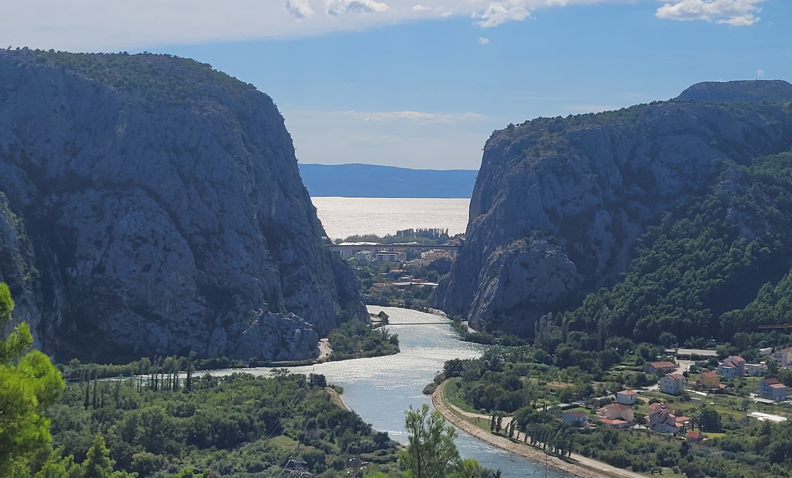
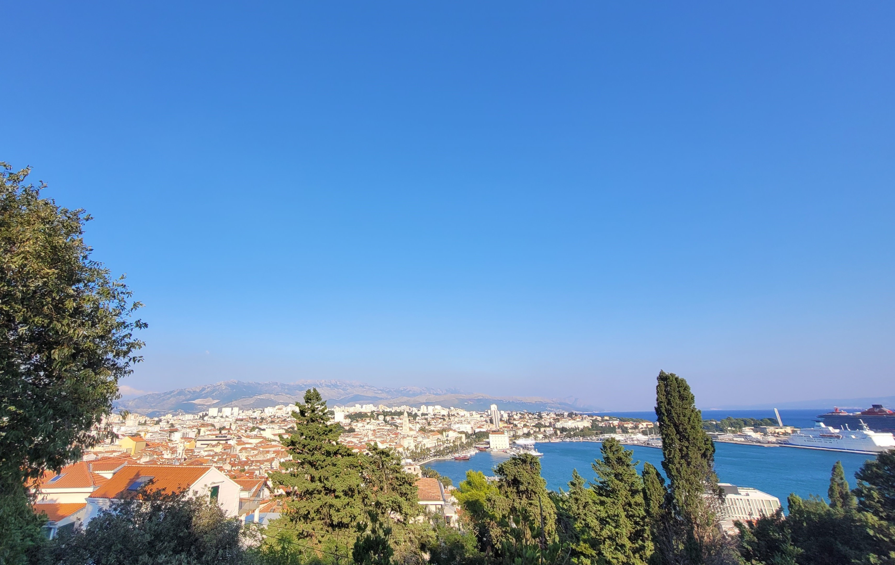
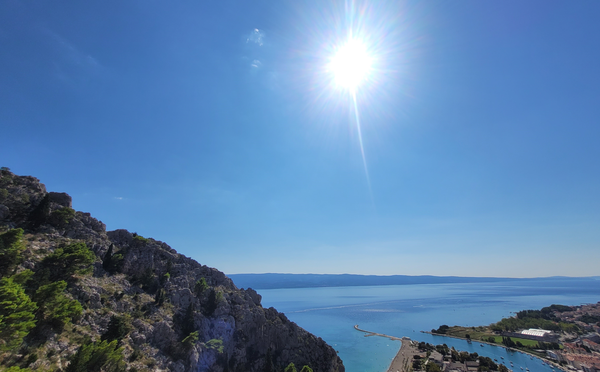

Omiš was perhaps one of the most beautiful places I ever remember visiting.
When we first landed, it was pitch black and difficult to make out anything
around us and once we got to the hotel, we had a pretty unlit view from our balcony.
But as we woke in the morning? I genuinely could not believe how amazing
the mountains and the river looked, I could’ve sat at that balcony forever.
On our first day we went on a small hike, although we had to go through quite
a lengthy walk on the main road before we could get to the start of the trail.
We didn't go through the full trail as we wanted to save our energy to explore
the town in the evening. Instead we went up to a viewpoint about halfway through
the trail which gave a spectacular view of the nature and the local area.

In the evening, we spent some time exploring the local area, it was quite late
so the beach was completely empty and we ended up having a nice stroll in the
area whilst the sun was setting. We finished off our day with dinner at one
of the local restaurants.
A couple of our days in Croatia were spent in Split - a beautiful city. The first
place we went to was Diocletian's Palace, a historical monument which also
happened to be a shooting location in Game of Thrones. It even had a small museum
dedicated to the show (which ended up being quite overpriced). The palace itself,
however, was beautiful and had plenty of nice restaurants and gift shops.
We also went to Park Šuma Marjan, it was an unexpected trek to get up there
but it was definitely worth the effort. We were met with a beautiful view of
Split and the ocean.

Most of the time from our holiday was spent in Omiš, as it was packed with several
areas worth visiting. Mirabella Fortress was one of the places we went to which,
once again, required quite the trek to get to the top of (including a ladder!).
Luckily there were plenty of break points and the view was, as always, very much
worth the journey.
My favourite part of the holiday was doing the Omiš ferrata, where we climbed
up one of the mountains in the span of about 3 hours. Initially I was quite
nervous as I had never done something like that before, but with the safety
equipment there to give me a little ego boost, I was able to speed right ahead of
my boyfriend. The only downside was being fully exposed to 25°C the entire way up.
Luckily, we had water and energy drinks by our side and were able to make it to
the top with some amazing sights to see throughout the journey.

Croatia was honestly such a beautiful place to be and we made the most of the few
days that we spent there. We'll definitely be visiting it again!